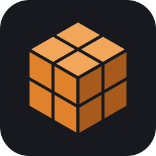

Movimento come in COD
Sprint tenuto o a tocco, tac sprint con doppio Shift, scivolata, accovacciarsi, sdraiarsi. Hit flinch: quando ti colpiscono la mira sobbalza davvero.

BS-BlockStrike ScaricaFPS multiplayer da browser con grafica a blocchi, per partite fino a 6 contro 6 tra amici. Il server gira sul PC di chi ospita, i posti vuoti li riempiono i bot.
Mappe a blocchi piccole e verticali. Nella vista dall'alto: punti di partenza delle due squadre e zone dell'Hardpoint.
Niente rinculo: ogni arma si distingue per danno, cadenza, portata e un suo gimmick. TTK = tempo dal primo colpo all'uccisione con tutti i colpi a segno, partendo da di salute.
Due armi fuori dal solito loadout: una si conquista sulla mappa, l'altra con una sfida.
Si ottengono con uccisioni di fila senza morire; se ne scelgono 2 e si usano con 3 e 4.
Sprint tenuto o a tocco, tac sprint con doppio Shift, scivolata, accovacciarsi, sdraiarsi. Hit flinch: quando ti colpiscono la mira sobbalza davvero.
Le armi non hanno rinculo: contano dispersione, distanza e gimmick (raffica, cadenza crescente, morso, perforazione, bipiede...).
Ogni arma sale di livello con le uccisioni e sblocca accessori: silenziatore, ottiche, laser, impugnature, caricatori estesi, slug e pallettoni. Fino a 5 per arma.
Livelli, sblocchi, sfide (il coltello da lancio si guadagna), skin per armi e personaggio, statistiche per modalità e storico delle partite.
Facile, Normale, Difficile, Ultra e Auto, che si adatta al K/D degli avversari. Raccolgono armi a terra, escono dal fuoco e saltano le tripwire.
Squadre pari completate dai bot; la prima partita è a sorpresa, poi si vota la prossima sotto i risultati e parte da sola.
Con la rotella o X segnali il nemico nel mirino o un punto. Il ping su un nemico lo segue per qualche secondo e richiama alcuni bot liberi, senza mandarli tutti.
Chi muore lascia l'arma che aveva in mano: la raccogli con E al posto della tua.
Killcam in terza persona dal punto di vista di chi ti ha ucciso, e a fine partita il replay della giocata migliore.
Un editor a blocchi nel browser per costruire nuove mappe, con spawn e zone dell'Hardpoint.
Nessun server a pagamento: l'host avvia il gioco, gli amici entrano con il launcher attraverso una rete privata ZeroTier, senza toccare il router.
Gira in Edge o Chrome con Three.js. Quattro livelli di grafica, da Bassa a Ultra con le ombre degli edifici.